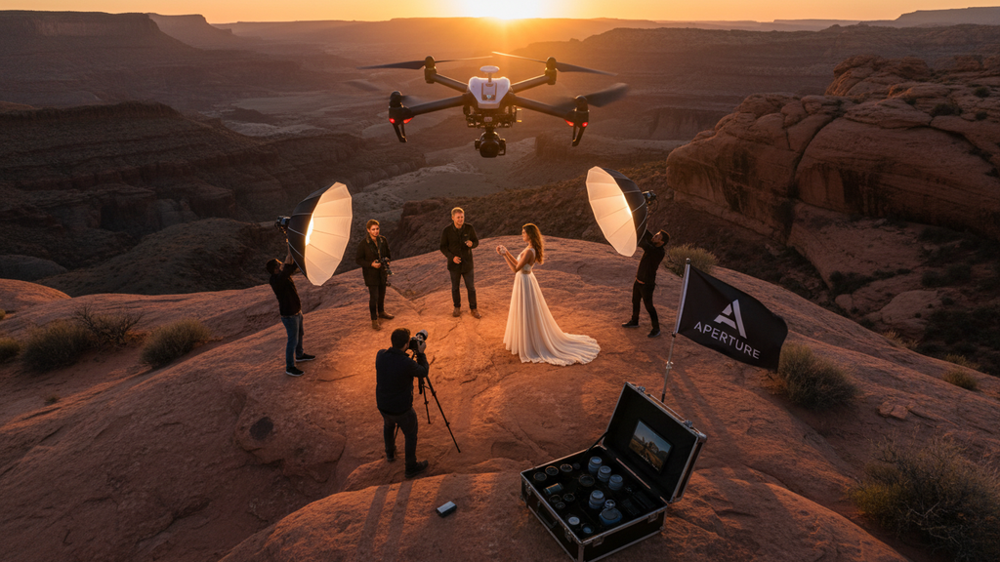

Stay Ahead with the Latest Photography Trends in Commercial Photography
In the fast-paced world of commercial photography, staying current with the latest photography trends is not just an advantage - it’s a necessity.
In the fast-paced world of commercial photography, staying current with the latest photography trends is not just an advantage - it’s a necessity. Every year, new styles, techniques, and technologies emerge, shaping how brands tell their stories visually. I’ve seen firsthand how adapting to these trends can elevate a photographer’s work and help businesses connect more deeply with their audiences. In this post, I’ll walk you through the most exciting developments in commercial photography and share practical tips to keep your work fresh and impactful.
Embracing the Latest Photography Trends in Commercial Work
Commercial photography is all about capturing images that sell a product, service, or idea. The latest photography trends reflect shifts in consumer preferences and technological advances. For example, minimalism continues to dominate, with clean, uncluttered compositions that highlight the product’s features. On the other hand, bold colors and dynamic lighting are making a comeback, adding energy and vibrancy to images.
One trend I find particularly powerful is the use of natural light. Instead of relying heavily on studio setups, photographers are embracing sunlight to create authentic, warm images. This approach resonates well with audiences who crave honesty and relatability in advertising.
To stay ahead, I recommend experimenting with these trends in your shoots:
- Use natural light creatively, shooting during golden hour for soft, flattering tones.
- Incorporate bold color palettes to make products pop.
- Simplify backgrounds to keep the focus on the subject.
- Try new angles and perspectives to add interest.
How Technology is Shaping Commercial Photography
Technology is a game-changer in commercial photography. Advances in camera sensors, editing software, and even artificial intelligence are opening new doors for creativity and efficiency. For instance, mirrorless cameras now offer incredible image quality with faster autofocus, making it easier to capture sharp, detailed shots in any setting.
Post-production tools have also evolved. Software like Adobe Lightroom and Photoshop allow photographers to enhance images subtly or dramatically, depending on the brand’s needs. AI-powered editing tools can automate routine tasks, freeing up time to focus on creative decisions.
Drones and 360-degree cameras are another exciting development. They enable unique perspectives and immersive experiences that were once impossible or prohibitively expensive. Brands can now showcase their products or locations in ways that truly engage viewers.
To leverage technology effectively:
- Invest in a quality mirrorless camera for versatility.
- Learn advanced editing techniques to polish your images.
- Explore drone photography for fresh angles.
- Use AI tools to streamline your workflow without sacrificing creativity.

The Power of Storytelling Through Visuals
In commercial photography, telling a story is crucial. Images that evoke emotions or convey a narrative connect better with audiences and drive engagement. The latest photography trends emphasize storytelling by focusing on context and lifestyle rather than just the product.
For example, instead of photographing a coffee cup alone, show it in a cozy morning setting with soft light, a book, and a window view. This approach invites viewers to imagine themselves in that moment, making the product more appealing.
I always encourage photographers to think beyond the object. Ask yourself:
- What story does this product tell?
- How can I capture the lifestyle or mood associated with it?
- What emotions do I want to evoke?
Using props, locations, and models thoughtfully can help build a compelling narrative. Authenticity is key here - staged scenes should feel natural and relatable.
Practical Tips to Stay Ahead in Commercial Photography
Keeping up with trends is one thing, but applying them effectively is another. Here are some actionable recommendations I’ve found useful:
- Continuous Learning: Follow industry blogs, attend workshops, and watch tutorials to stay informed.
- Experiment Regularly: Don’t be afraid to try new styles or techniques in your personal projects.
- Build a Diverse Portfolio: Showcase a range of styles to attract different clients.
- Network with Clients: Understand their brand values and target audience to tailor your photography.
- Invest in Quality Gear: Good equipment can make a significant difference in image quality and workflow.
Remember, trends are tools, not rules. Use them to enhance your unique vision rather than copying blindly.
Looking Forward: What’s Next in Commercial Photography?
The future of commercial photography looks bright and dynamic. Sustainability and inclusivity are becoming central themes, influencing how brands and photographers approach their work. Expect to see more eco-friendly shoots, diverse models, and authentic representations of people and products.
Virtual and augmented reality are also on the horizon, offering immersive ways to experience products. As these technologies mature, photographers will need to adapt their skills to new formats and platforms.
Staying ahead means being open to change and continuously refining your craft. By embracing the latest photography trends and combining them with your creativity, you can create compelling images that stand out in a crowded market.
If you want to dive deeper into these trends and learn how to apply them effectively, I recommend checking out this resource for expert insights and tutorials.
By keeping these trends and tips in mind, you’ll be well-equipped to produce commercial photography that not only meets but exceeds client expectations. The key is to stay curious, adaptable, and confident in your creative choices. Your next shoot could be the one that sets a new standard in the industry.